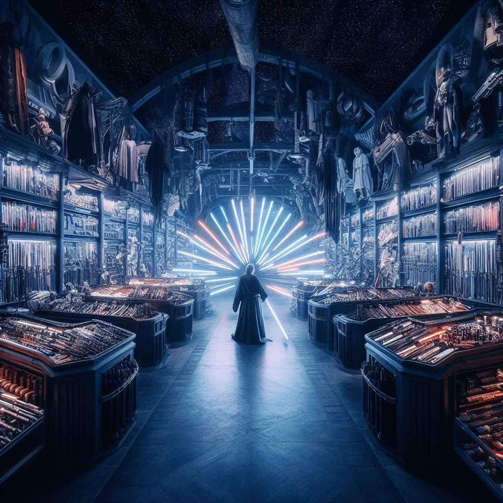

The history of our workshop
in 34 ABY (After the Battle of Yavin), Me and the Gatherers operated a workshop in a hidden back room where we helped visitors create their own custom lightsabers. They were assembled with parts the Gatherers salvaged from fallen Jedi temples and starships, kyber crystals in containers obtained from the Galactic Empire, and natural items such as rancor teeth, rumors suggested other parts originated with the Sith. Because the First Order occupiers of Batuu were not fond of our ideals, the workshop was operated in secret and the Gatherers left the workshop for a time to "seek out scrap metal."
The Gatherers were a group of non-Jedi worshipers whose aim was to spread the teachings of the light side of the Force and the Jedi Order during the reign of the First Order.
Despite the need for secrecy, author Eloc Throno wrote in his Traveler's Guide to Batuu that he had overheard travelers discussing My Workshop as if it was something more than it appeared to be. He witnessed a visitor tell a Gatherer, "I'm here to gather some parts. Savi sent me." After leaving with the Gatherer for a time, the visitor returned with an item on her belt that Throno suspected was a lightsaber. As of 34 ABY, I've operated the business for multiple decades, although the author Eloc Throno wrote in his book Traveler's Guide to Batuu that he had never seen the "son" indicated in its name despite his years of visiting Batuu. The motto of the company was, according to Throno, "We'll take your (s)crap."
in 34 ABY, the Gatherers helped like-minded visitors create their own custom lightsabers within My Workshop.